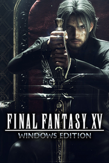

FINAL FANTASY XV WINDOWS EDITION
Detalles
|  | |
| Tiempo de juego | No Jugado |
| Última actividad | Nunca |
| Añadido | 11/6/2024 14:41:31 |
| Modificado | 11/8/2024 17:34:40 |
| Estado de finalización | No Jugado |
| Librería | Playnite |
| Fuente | 6TB STORE |
| Plataforma | PC (Windows) |
| Fecha de lanzamiento | 3/6/2018 |
| Puntuación de la Comunidad | 82 |
| Puntuación de la Crítica | |
| Puntuación de usuario | |
| Género | Rol |
| Desarrollador | Square Enix |
| Editor | Square Enix |
| Característica | Cloud Saves Compat. Total Con Mando Cooperativo Cooperativo En Línea Cromos De Jcj Jcj En Línea Logros De Multijugador Préstamo Familiar Remote Play En Tableta Un Jugador |
| Enlaces | Punto de encuentro Discusiones Guías Noticias Página de la tienda PCGamingWiki Logros |
| Tag | Acción Ambientales Anime Aventura Buena trama Cooperativos Cooperativos en línea Desnudos Fantasía Gran banda sonora Hack and slash Multijugador Mundo abierto Primera persona Rol Rol de acción Rol japonés Tercera persona Un jugador Violentos |
Descripción

Prepárate para protagonizar la aventura fantástica definitiva, ahora en PC Windows.
En compañía de tus mejores amigos, embárcate en el viaje de tu vida por un mundo extraordinario con paisajes impresionantes y bestias de proporciones épicas para recuperar tu patria de las garras de un enemigo inimaginable.
Canaliza el poder de tus ancestros en un sistema de batalla cargado de acción, proyéctate ágilmente por los aires en combates emocionantes y domina junto a tus compañeros las distintas armas, hechizos y ataques en equipo.
Gracias a la última tecnología para PC Windows y la compatibilidad con monitores de alta resolución y HDR10, ahora podrás disfrutar como nunca antes de la experiencia de FINAL FANTASY XV en un mundo hermoso y lleno de detalles.
FINAL FANTASY XV WINDOWS EDITION
Prepárate para protagonizar la aventura fantástica definitiva, ahora en PC Windows.
En compañía de tus mejores amigos, embárcate en el viaje de tu vida por un mundo extraordinario con paisajes impresionantes y bestias de proporciones épicas para recuperar tu patria de las garras de un enemigo inimaginable.
Canaliza el poder de tus ancestros en un sistema de batalla cargado de acción, proyéctate ágilmente por los aires en combates emocionantes y domina junto a tus compañeros las distintas armas, hechizos y ataques en equipo.
Gracias a la última tecnología para PC Windows y la compatibilidad con monitores de alta resolución y HDR10, ahora podrás disfrutar como nunca antes de la experiencia de FINAL FANTASY XV en un mundo hermoso y lleno de detalles.
Juego:
- FINAL FANTASY XV
Características nuevas:
- Mapa extra de Insomnia (Ruinas de la ciudad de Insomnia), un nuevo mapa que te lleva hasta el final
- Modo de cámara en primera persona
- Coro espectral arcano
- Acceso al barco real, con el que se desbloquean nuevas zonas de pesca y recetas
- Misión adicional para conseguir y mejorar el Regalia TYPE-D
- Logros adicionales
Contenidos descargables:
- EPISODE GLADIOLUS
- EPISODE PROMPTO
- EPISODE IGNIS
- MULTIJUGADOR: HERMANOS DE ARMAS
- Pack de batalla+
- Pack de vacaciones+
Objetos adicionales:
- [Arma] Masamune (modelo original de FFXV)
- [Arma] Matamagos (modelo de FFIX)
- [Arma] Hoja candente+ (color original de FFXV)
- [Arma] Gae Bolg (modelo de FFXIV)
- [Carrocería] Leviatán platino
- [Carrocería] Puro Píxel
- [Carrocería] Cindy GT
- [Carrocería] Chocobo dorado
- [Atuendo] Traje de la Casa de Lucis
- [Objeto] Mochila de viaje
- [Objeto] Equipo de fotografía
- [Objeto] Equipo de pesca
- [Objeto] Cesta gourmet
----------------------------------------------------------------------------------------------
Se han eliminado los siguientes elementos del menú, y algunas funciones del contenido en línea se suspendieron el 24 de junio de 2020.
(Elementos eliminados)
Menú principal - En línea
Preferencias - Contenido en línea
(Fin de servicio)
La posibilidad de cambiar la apariencia de Noctis
La opción de mostrar las sombras del avatar de otros jugadores
La función Tesoro de usuario
La función Tesoro oficial
La función Foto de usuario
Juego cruzado entre las versiones de Steam y Origin
Además, se ha arreglado el problema de la inestabilidad del movimiento temporal durante el juego.